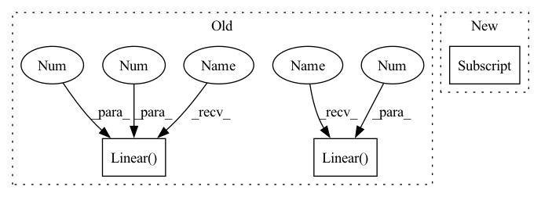

Pattern ID :37725
Before Change
// mnist images are (1, 28, 28) (channels, width, height)
self.layer_1 = nn.Linear(28 * 28, 256)
self.layer_2 = nn.Linear(256 , 128 )
self.layer_3 = nn.Linear( 128, 64 )
self.layer_4 = nn.Linear(64, 10)
def forward(self, x):
batch_size, channels, width, height = x.size()After Change
// mnist images are (1, 28, 28) (channels, width, height)
self.layer_1 = nn.Linear(28 * 28, config["lin1_size"])
self.layer_2 = nn.Linear(config["lin1_size"], config["lin2_size"])
self.layer_3 = nn.Linear(config["lin2_size"], config["lin3_size"] )
self.layer_4 = nn.Linear(config["lin3_size"], 10)
def forward(self, x):In pattern: SUPERPATTERN
Frequency: 3
Non-data size: 3
Instances Fragment ID: 108340341
Project Name: ashleve/lightning-hydra-template
Commit Name: 8fd92337bcb0f78ad8f6fb3bd9b7b874183bca4d
Time: 2020-11-04
Author: zalewski.ukas@gmail.com
File Name: utils/models.py
M Class Name: ModelMNISTv2
N Class Name: ModelMNISTv2
M Method Name: __init__(2)
N Method Name: __init__(2)
M Parent Class: nn.Module
N Parent Class: nn.Module
M File Name: utils/models.py
N File Name: utils/models.py
M Start Line: 35
M End Line: 38
N Start Line: 35
N End Line: 38
Before Change
// mnist images are (1, 28, 28) (channels, width, height)
self.layer_1 = nn.Linear(28 * 28, 256)
self.layer_2 = nn.Linear( 256, 128 )
self.layer_3 = nn.Linear(128 , 64 )
self.layer_4 = nn.Linear(64, 10)
def forward(self, x):
batch_size, channels, width, height = x.size()After Change
// mnist images are (1, 28, 28) (channels, width, height)
self.layer_1 = nn.Linear(28 * 28, config["lin1_size"])
self.layer_2 = nn.Linear(config["lin1_size"], config["lin2_size"])
self.layer_3 = nn.Linear(config["lin2_size"], config["lin3_size"] )
self.layer_4 = nn.Linear(config["lin3_size"], 10)
def forward(self, x): Fragment ID: 108340340
Project Name: ashleve/lightning-hydra-template
Commit Name: 8fd92337bcb0f78ad8f6fb3bd9b7b874183bca4d
Time: 2020-11-04
Author: zalewski.ukas@gmail.com
File Name: utils/models.py
M Class Name: ModelMNISTv2
N Class Name: ModelMNISTv2
M Method Name: __init__(2)
N Method Name: __init__(2)
M Parent Class: nn.Module
N Parent Class: nn.Module
M File Name: utils/models.py
N File Name: utils/models.py
M Start Line: 35
M End Line: 38
N Start Line: 35
N End Line: 38
Before Change
*self.model.features[1:]
)
self.model.classifier = nn.Sequential(
nn.Linear(4608 , 4096, bias=True) ,
nn.ReLU(inplace=True),
nn.Dropout(),
nn.Linear(4096 , 4096 , bias=True) ,
nn.ReLU(inplace=True),
nn.Dropout(),
nn.Linear(4096, self.config.num_classes, bias=True),After Change
if self.config.pretrained:
self.model = models.vgg16(self.config.pretrained, False)
self.model.classifier = self.model.classifier[:-1] // remove final layer
self.model.classifier.add_module(
"6", nn.Linear(4096, self.config.num_classes, bias=True)
) Fragment ID: 108340337
Project Name: biasvariancelabs/aitlas
Commit Name: 3c4c781681550868173efe6230071ba63a1b65d2
Time: 2020-12-30
Author: ivan.kitanovski@gmail.com
File Name: aitlas/models/vgg16.py
M Class Name: VGG16MultiLabel
N Class Name: VGG16MultiLabel
M Method Name: __init__(2)
N Method Name: __init__(2)
M Parent Class: BaseMultilabelClassifier
N Parent Class: BaseMultilabelClassifier
M File Name: aitlas/models/vgg16.py
N File Name: aitlas/models/vgg16.py
M Start Line: 26
M End Line: 47
N Start Line: 25
N End Line: 40
Before Change
// create small network that will take features as input
// TODO: got to figure out what is input size
self.addon_nn = nn.Sequential(
nn.Linear( feat_size, 4096 ) ,
nn.ReLU(),
nn.Linear(4096 , 4096 ) ,
nn.ReLU(),
nn.Linear(4096, num_classes))
After Change
param.requires_grad = False
// create small network that will take features as input
self.addon_nn = nn.Linear(self.FEAT_SIZE[stack_num] , num_classes)
def forward(self, x: torch.Tensor) -> torch.Tensor: Fragment ID: 108340305
Project Name: microsoft/archai
Commit Name: 16a8b37ef55c82318b3c89402322a1a36f063113
Time: 2022-12-16
Author: dedey@microsoft.com
File Name: archai/algos/proxynas/addon_nn.py
M Class Name: AddonNN
N Class Name: AddonNN
M Method Name: __init__(4)
N Method Name: __init__(4)
M Parent Class: nn.Module
N Parent Class: nn.Module
M File Name: archai/algos/proxynas/addon_nn.py
N File Name: archai/algos/proxynas/addon_nn.py
M Start Line: 12
M End Line: 29
N Start Line: 8
N End Line: 23